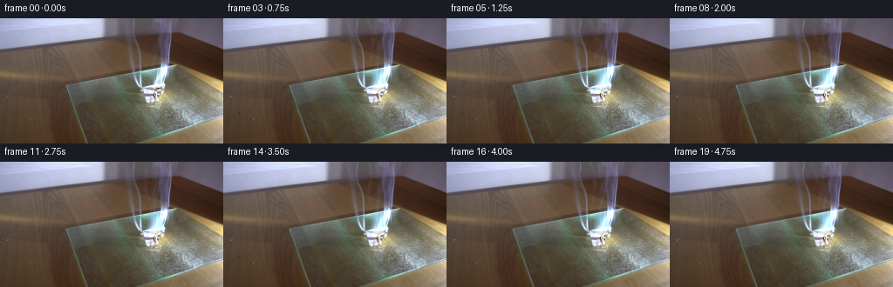
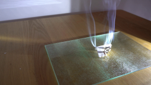
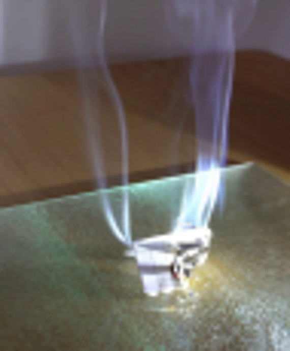
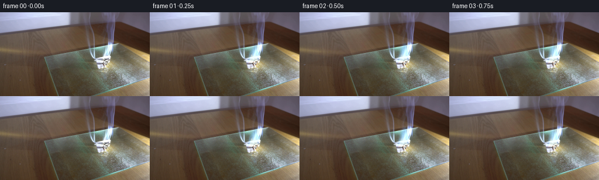
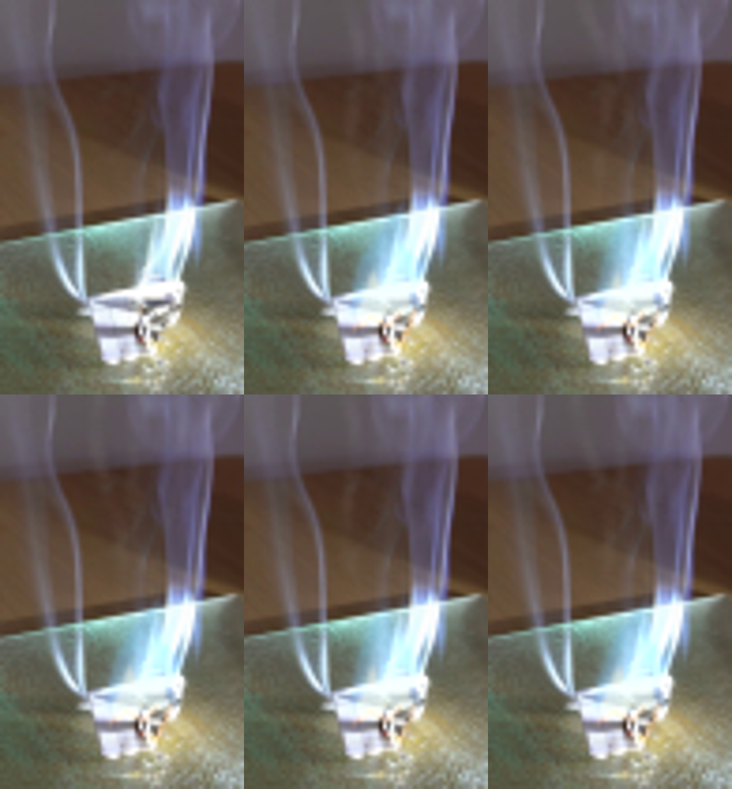

CODING AGENTS AS PIXEL WORLD MODELS
traex/GPT-5.6-Sol · 0139
点击播放 · 原生 RGB 像素
逐轮保存的候选
回放视频、检查图与代码变化。
每份候选均可单独播放。实际图片检查记录在下方工具轨迹中。
候选 01播放与检查图
点击播放 · 原生 RGB 像素

展开代码变化
--- 上一保存版本
+++ 本次保存版本
@@ -0,0 +1,187 @@
+from pathlib import Path
+import math
+import numpy as np
+import cv2
+from PIL import Image, ImageDraw
+import artifact_io
+
+W, H = 256, 144
+N = 20
+
+
+def soft_ellipse(mask, cx, cy, sx, sy, value=1.0):
+ """Accumulate a soft elliptical puff into a float mask."""
+ r = int(max(sx, sy) * 3.3 + 2)
+ x0, x1 = max(0, int(cx-r)), min(W, int(cx+r+1))
+ y0, y1 = max(0, int(cy-r)), min(H, int(cy+r+1))
+ if x1 <= x0 or y1 <= y0:
+ return
+ yy, xx = np.mgrid[y0:y1, x0:x1]
+ g = np.exp(-0.5*((xx-cx)/sx)**2 - 0.5*((yy-cy)/sy)**2)
+ mask[y0:y1, x0:x1] += value*g
+
+
+def composite_color(img, color, alpha):
+ a = np.clip(alpha, 0, 1)[..., None]
+ return img*(1-a) + np.asarray(color, np.float32)*a
+
+
+def flame_polygon_mask(points, blur):
+ scale = 4
+ p = [(int(x*scale), int(y*scale)) for x, y in points]
+ im = Image.new('L', (W*scale, H*scale), 0)
+ ImageDraw.Draw(im).polygon(p, fill=255)
+ m = np.asarray(im, np.float32)/255.0
+ if blur > 0:
+ m = cv2.GaussianBlur(m, (0,0), blur*scale)
+ return cv2.resize(m, (W,H), interpolation=cv2.INTER_AREA)
+
+
+def line_mask(curves, blur=1.0):
+ m = np.zeros((H,W), np.float32)
+ for pts, val, width in curves:
+ q = np.round(np.array(pts)).astype(np.int32).reshape((-1,1,2))
+ cv2.polylines(m, [q], False, float(val), int(width), cv2.LINE_AA)
+ if blur:
+ m = cv2.GaussianBlur(m, (0,0), blur)
+ return m
+
+
+def make_smoke(t):
+ # Curled, translucent filaments. Their phase advances with real time while
+ # the lower endpoint remains tied to the burning fold.
+ edge = np.zeros((H,W), np.float32)
+ body = np.zeros((H,W), np.float32)
+ rng = np.random.default_rng(7351)
+ streams = [
+ (173.0, -0.115, 2.6, 0.2, 0.54),
+ (177.5, -0.025, 1.9, 2.1, 0.38),
+ (181.0, 0.105, 2.5, 4.0, 0.50),
+ (184.0, 0.175, 3.3, 1.35, 0.28),
+ ]
+ for si, (source, drift, amp, phase, strength) in enumerate(streams):
+ pts=[]
+ vals=[]
+ # one point per vertical pixel gives gently sinuous continuous trails
+ for age in np.linspace(0, 31, 63):
+ y = 78.5 - age*2.72
+ a = min(1.0, age/8.0)
+ x = (source + drift*(age**1.22)
+ + amp*a*math.sin(0.29*age + phase + 0.47*t)
+ + 0.65*a*math.sin(0.115*age - 0.31*t + phase*1.7))
+ pts.append((x,y))
+ # broken density segments create fibrous white-smoke texture
+ for j in range(len(pts)-1):
+ age=j*0.5
+ modulation = 0.62 + 0.38*math.sin(0.83*age - 0.58*t + phase)
+ width = 1 if age < 12 else 2
+ cv2.line(edge, (round(pts[j][0]),round(pts[j][1])),
+ (round(pts[j+1][0]),round(pts[j+1][1])),
+ float(strength*modulation), width, cv2.LINE_AA)
+ # a broad very faint interior gives volume without looking painted
+ q=np.round(np.array(pts)).astype(np.int32).reshape((-1,1,2))
+ cv2.polylines(body,[q],False,float(strength*.25),4 if si!=3 else 3,cv2.LINE_AA)
+
+ edge = cv2.GaussianBlur(edge,(0,0),0.75)
+ body = cv2.GaussianBlur(body,(0,0),2.3)
+
+ # Convected puffs from several earlier emissions; positions are periodic
+ # in emission time so the plume is already established at the first moment.
+ puffs = np.zeros((H,W), np.float32)
+ for p in range(28):
+ birth = -26 + p*1.72
+ age = t-birth
+ if age < 0 or age > 35: continue
+ phase = rng.uniform(0, 2*math.pi)
+ side = rng.normal(0,1)
+ y = 79 - age*2.48
+ x = 178 + 0.10*side*age + (1.0+0.06*age)*math.sin(phase+0.19*age)
+ sx = 1.15 + 0.075*age
+ sy = 1.7 + 0.105*age
+ fade = min(1, age/2.4)*max(0, 1-age/36)
+ soft_ellipse(puffs,x,y,sx,sy,fade*rng.uniform(.16,.34))
+ puffs=np.clip(puffs,0,1)
+ return np.clip(body*.11 + edge*.12 + puffs*.10,0,.24)
+
+
+def render(base, k):
+ if k == 0:
+ return base.copy()
+ t=float(k)
+ img=base.astype(np.float32)
+
+ # Warm, diffuse reflection on the pebbled glass under the burning paper.
+ yy,xx=np.mgrid[:H,:W]
+ pulse=.82+.18*math.sin(1.73*t+0.4)
+ glow=np.exp(-(((xx-179)/16.5)**2+((yy-91)/8.2)**2)/2)*(.055*pulse)
+ img += glow[...,None]*np.array([86,48,4],np.float32)
+
+ # The folded paper progressively chars along the flame-facing crease.
+ char = line_mask([
+ ([(184,79),(182,84),(184,89),(181,95)], .78, 2),
+ ([(172,84),(177,86),(181,85)], .55, 1),
+ ([(166,91),(172,93),(176,97)], .42, 1),
+ ], 0.65)
+ char_alpha=char*(.055+.0085*t)
+ img=composite_color(img,(45,25,13),char_alpha)
+
+ # Fire geometry flickers, but remains rooted at exactly the same folded paper.
+ f1=math.sin(t*1.67); f2=math.sin(t*2.93+1.2)
+ tipx=180.5+2.1*f1+0.8*f2
+ tipy=51.5+5.1*(.5+.5*math.sin(t*2.31+0.7))
+ outer=[(168.0,84.0),(168.8,77.0),(171.5+f2,70.0),
+ (174.2+1.1*f1,63.0),(tipx,tipy),
+ (182.5+f2,65.0),(188.0+1.2*f1,70.5),
+ (185.6,78.0),(188.0,83.0)]
+ outer_soft=flame_polygon_mask(outer,2.2)
+ outer_crisp=flame_polygon_mask(outer,0.38)
+ # blue aura then pale cyan body; screen-like additive glow
+ img += outer_soft[...,None]*np.array([14,36,62],np.float32)*(.82+.12*f2)
+ img=composite_color(img,(112,188,255),outer_crisp*(.17+.025*f1))
+
+ mid=[(170.0,83.8),(171.3,77.0),(174.8+f1,70.0),
+ (178.1+.8*f2,60.8+2.0*f1),(181.8,69.5),
+ (185.3+f2,73.8),(183.5,82.8)]
+ midm=flame_polygon_mask(mid,0.75)
+ img=composite_color(img,(190,225,255),midm*(.30+.04*f2))
+ img += cv2.GaussianBlur(midm,(0,0),2.8)[...,None]*np.array([18,27,31],np.float32)
+
+ # Hot white/yellow core and two irregular orange tongues along the paper edge.
+ core=[(169.2,84.6),(172.2,78.4),(175.0+.6*f2,72.2),
+ (177.0+1.0*f1,78.5),(183.7,75.3+1.5*f2),(184.5,83.7)]
+ cm=flame_polygon_mask(core,0.55)
+ img=composite_color(img,(255,250,218),cm*(.47+.06*math.sin(t*2.4)))
+ ember_curves=[
+ ([(169,87),(173,84),(178,86),(181,83)], .75, 1),
+ ([(181,91),(184,86),(185,82)], .58+.12*f1, 1),
+ ]
+ em=line_mask(ember_curves,.55)
+ img += em[...,None]*np.array([65,27,2],np.float32)
+ img=composite_color(img,(255,157,43),np.clip(em*.28,0,.42))
+
+ # Fresh white smoke overlays the luminous flame and rises in changing curls.
+ sm=make_smoke(t)
+ # Slight cool grey body with white highlights, preserving translucency.
+ img=composite_color(img,(220,225,229),sm*.78)
+ highlight=cv2.GaussianBlur(sm,(0,0),.55)
+ img += highlight[...,None]*np.array([25,27,31],np.float32)
+
+ # Dense little white cloud just where combustion products leave the fold.
+ low=np.zeros((H,W),np.float32)
+ soft_ellipse(low,177.5+0.7*math.sin(t*1.4),76.5,3.8,2.4,.16)
+ soft_ellipse(low,181+0.5*math.sin(t*1.9),72.5,2.4,4.3,.11)
+ img=composite_color(img,(235,239,240),np.clip(low,0,.18))
+
+ return np.clip(img,0,255).astype(np.uint8)
+
+
+def main():
+ case_dir=Path(__file__).resolve().parent
+ base=np.asarray(Image.open(case_dir/'first_frame.png').convert('RGB'),dtype=np.uint8)
+ frames=np.stack([render(base,k) for k in range(N)],axis=0)
+ # Contract guard: the given image is reproduced byte for byte at frame zero.
+ frames[0]=base
+ artifact_io.save(frames,case_dir)
+
+if __name__=='__main__':
+ main()
可观测工具轨迹
实际执行的命令与返回图片。
命令 1exit 0
/bin/bash -lc 'cat prompt.txt'
命令 2exit 0
/bin/bash -lc "cat GENERATION_RULES.md && printf '\\n---FILES---\\n' && find . -maxdepth 2 -type f -printf '%p\\n' | sort"
命令 3exit 0
/bin/bash -lc "sed -n '1,240p' artifact_io.py"
命令 4exit 0
/bin/bash -lc "python - <<'PY'
from PIL import Image
im=Image.open('first_frame.png')
print(im.mode, im.size)
PY"命令 5exit 0
/bin/bash -lc "python - <<'PY'
try:
import cv2; print('cv2',cv2.__version__)
except Exception as e: print(e)
try:
import scipy; print('scipy',scipy.__version__)
except Exception as e: print(e)
PY"命令 6exit 0
/bin/bash -lc "python - <<'PY'
from PIL import Image
im=Image.open('first_frame.png')
im.crop((120,0,215,115)).resize((570,690)).save('.tmp/crop.png')
PY"命令 7exit 0
/bin/bash -lc "cat > generate.py <<'PY'
from pathlib import Path
import math
import numpy as np
import cv2
from PIL import Image, ImageDraw
import artifact_io
W, H = 256, 144
N = 20
def soft_ellipse(mask, cx, cy, sx, sy, value=1.0):
\"\"\"Accumulate a soft elliptical puff into a float mask.\"\"\"
r = int(max(sx, sy) * 3.3 + 2)
x0, x1 = max(0, int(cx-r)), min(W, int(cx+r+1))
y0, y1 = max(0, int(cy-r)), min(H, int(cy+r+1))
if x1 <= x0 or y1 <= y0:
return
yy, xx = np.mgrid[y0:y1, x0:x1]
g = np.exp(-0.5*((xx-cx)/sx)**2 - 0.5*((yy-cy)/sy)**2)
mask[y0:y1, x0:x1] += value*g
def composite_color(img, color, alpha):
a = np.clip(alpha, 0, 1)[..., None]
return img*(1-a) + np.asarray(color, np.float32)*a
def flame_polygon_mask(points, blur):
scale = 4
p = [(int(x*scale), int(y*scale)) for x, y in points]
im = Image.new('L', (W*scale, H*scale), 0)
ImageDraw.Draw(im).polygon(p, fill=255)
m = np.asarray(im, np.float32)/255.0
if blur > 0:
m = cv2.GaussianBlur(m, (0,0), blur*scale)
return cv2.resize(m, (W,H), interpolation=cv2.INTER_AREA)
def line_mask(curves, blur=1.0):
m = np.zeros((H,W), np.float32)
for pts, val, width in curves:
q = np.round(np.array(pts)).astype(np.int32).reshape((-1,1,2))
cv2.polylines(m, [q], False, float(val), int(width), cv2.LINE_AA)
if blur:
m = cv2.GaussianBlur(m, (0,0), blur)
return m
def make_smoke(t):
# Curled, translucent filaments. Their phase advances with real time while
# the lower endpoint remains tied to the burning fold.
edge = np.zeros((H,W), np.float32)
body = np.zeros((H,W), np.float32)
rng = np.random.default_rng(7351)
streams = [
(173.0, -0.115, 2.6, 0.2, 0.54),
(177.5, -0.025, 1.9, 2.1, 0.38),
(181.0, 0.105, 2.5, 4.0, 0.50),
(184.0, 0.175, 3.3, 1.35, 0.28),
]
for si, (source, drift, amp, phase, strength) in enumerate(streams):
pts=[]
vals=[]
# one point per vertical pixel gives gently sinuous continuous trails
for age in np.linspace(0, 31, 63):
y = 78.5 - age*2.72
a = min(1.0, age/8.0)
x = (source + drift*(age**1.22)
+ amp*a*math.sin(0.29*age + phase + 0.47*t)
+ 0.65*a*math.sin(0.115*age - 0.31*t + phase*1.7))
pts.append((x,y))
# broken density segments create fibrous white-smoke texture
for j in range(len(pts)-1):
age=j*0.5
modulation = 0.62 + 0.38*math.sin(0.83*age - 0.58*t + phase)
width = 1 if age < 12 else 2
cv2.line(edge, (round(pts[j][0]),round(pts[j][1])),
(round(pts[j+1][0]),round(pts[j+1][1])),
float(strength*modulation), width, cv2.LINE_AA)
# a broad very faint interior gives volume without looking painted
q=np.round(np.array(pts)).astype(np.int32).reshape((-1,1,2))
cv2.polylines(body,[q],False,float(strength*.25),4 if si"'!=3 else 3,cv2.LINE_AA)
edge = cv2.GaussianBlur(edge,(0,0),0.75)
body = cv2.GaussianBlur(body,(0,0),2.3)
# Convected puffs from several earlier emissions; positions are periodic
# in emission time so the plume is already established at the first moment.
puffs = np.zeros((H,W), np.float32)
for p in range(28):
birth = -26 + p*1.72
age = t-birth
if age < 0 or age > 35: continue
phase = rng.uniform(0, 2*math.pi)
side = rng.normal(0,1)
y = 79 - age*2.48
x = 178 + 0.10*side*age + (1.0+0.06*age)*math.sin(phase+0.19*age)
sx = 1.15 + 0.075*age
sy = 1.7 + 0.105*age
fade = min(1, age/2.4)*max(0, 1-age/36)
soft_ellipse(puffs,x,y,sx,sy,fade*rng.uniform(.16,.34))
puffs=np.clip(puffs,0,1)
return np.clip(body*.11 + edge*.12 + puffs*.10,0,.24)
def render(base, k):
if k == 0:
return base.copy()
t=float(k)
img=base.astype(np.float32)
# Warm, diffuse reflection on the pebbled glass under the burning paper.
yy,xx=np.mgrid[:H,:W]
pulse=.82+.18*math.sin(1.73*t+0.4)
glow=np.exp(-(((xx-179)/16.5)**2+((yy-91)/8.2)**2)/2)*(.055*pulse)
img += glow[...,None]*np.array([86,48,4],np.float32)
# The folded paper progressively chars along the flame-facing crease.
char = line_mask([
([(184,79),(182,84),(184,89),(181,95)], .78, 2),
([(172,84),(177,86),(181,85)], .55, 1),
([(166,91),(172,93),(176,97)], .42, 1),
], 0.65)
char_alpha=char*(.055+.0085*t)
img=composite_color(img,(45,25,13),char_alpha)
# Fire geometry flickers, but remains rooted at exactly the same folded paper.
f1=math.sin(t*1.67); f2=math.sin(t*2.93+1.2)
tipx=180.5+2.1*f1+0.8*f2
tipy=51.5+5.1*(.5+.5*math.sin(t*2.31+0.7))
outer=[(168.0,84.0),(168.8,77.0),(171.5+f2,70.0),
(174.2+1.1*f1,63.0),(tipx,tipy),
(182.5+f2,65.0),(188.0+1.2*f1,70.5),
(185.6,78.0),(188.0,83.0)]
outer_soft=flame_polygon_mask(outer,2.2)
outer_crisp=flame_polygon_mask(outer,0.38)
# blue aura then pale cyan body; screen-like additive glow
img += outer_soft[...,None]*np.array([14,36,62],np.float32)*(.82+.12*f2)
img=composite_color(img,(112,188,255),outer_crisp*(.17+.025*f1))
mid=[(170.0,83.8),(171.3,77.0),(174.8+f1,70.0),
(178.1+.8*f2,60.8+2.0*f1),(181.8,69.5),
(185.3+f2,73.8),(183.5,82.8)]
midm=flame_polygon_mask(mid,0.75)
img=composite_color(img,(190,225,255),midm*(.30+.04*f2))
img += cv2.GaussianBlur(midm,(0,0),2.8)[...,None]*np.array([18,27,31],np.float32)
# Hot white/yellow core and two irregular orange tongues along the paper edge.
core=[(169.2,84.6),(172.2,78.4),(175.0+.6*f2,72.2),
(177.0+1.0*f1,78.5),(183.7,75.3+1.5*f2),(184.5,83.7)]
cm=flame_polygon_mask(core,0.55)
img=composite_color(img,(255,250,218),cm*(.47+.06*math.sin(t*2.4)))
ember_curves=[
([(169,87),(173,84),(178,86),(181,83)], .75, 1),
([(181,91),(184,86),(185,82)], .58+.12*f1, 1),
]
em=line_mask(ember_curves,.55)
img += em[...,None]*np.array([65,27,2],np.float32)
img=composite_color(img,(255,157,43),np.clip(em*.28,0,.42))
# Fresh white smoke overlays the luminous flame and rises in changing curls.
sm=make_smoke(t)
# Slight cool grey body with white highlights, preserving translucency.
img=composite_color(img,(220,225,229),sm*.78)
highlight=cv2.GaussianBlur(sm,(0,0),.55)
img += highlight[...,None]*np.array([25,27,31],np.float32)
# Dense little white cloud just where combustion products leave the fold.
low=np.zeros((H,W),np.float32)
soft_ellipse(low,177.5+0.7*math.sin(t*1.4),76.5,3.8,2.4,.16)
soft_ellipse(low,181+0.5*math.sin(t*1.9),72.5,2.4,4.3,.11)
img=composite_color(img,(235,239,240),np.clip(low,0,.18))
return np.clip(img,0,255).astype(np.uint8)
def main():
case_dir=Path(__file__).resolve().parent
base=np.asarray(Image.open(case_dir/'"'first_frame.png').convert('RGB'),dtype=np.uint8)
frames=np.stack([render(base,k) for k in range(N)],axis=0)
# Contract guard: the given image is reproduced byte for byte at frame zero.
frames[0]=base
artifact_io.save(frames,case_dir)
if __name__=='__main__':
main()
PY
python generate.py
python - <<'PY'
from PIL import Image
import numpy as np
f=np.array(Image.open('first_frame.png')); z=np.array(Image.open('frames/00.png'))
print('frame0 exact', np.array_equal(f,z), 'frames',len(list(__import__('pathlib').Path('frames').glob('*.png'))))
PY"命令 8exit 0
/bin/bash -lc "python - <<'PY'
from PIL import Image
import numpy as np
for i in range(1,20):
a=np.array(Image.open(f'frames/{i-1:02d}.png')).astype(int)
b=np.array(Image.open(f'frames/{i:02d}.png')).astype(int)
d=np.abs(a-b)
print(i, round(d.mean(),3), np.sum(d.max(2)>3), d.max())
PY"命令 9exit 0
/bin/bash -lc "python - <<'PY'
from PIL import Image
for i in [0,1,3,8,14,19]:
im=Image.open(f'frames/{i:02d}.png').crop((140,0,205,105)).resize((390,630))
im.save(f'.tmp/c{i}.png')
# montage
out=Image.new('RGB',(390*3,630*2))
for j,i in enumerate([0,1,3,8,14,19]): out.paste(Image.open(f'.tmp/c{i}.png'),((j%3)*390,(j//3)*630))
out.save('.tmp/crops.png')
PY"视觉工具实际返回图片 1

视觉工具实际返回图片 2

视觉工具实际返回图片 3

视觉工具实际返回图片 4

视觉工具实际返回图片 5

保存候选 1 份；完成命令 9 次；可验证图片返回 5 张。原始 API 响应与完整日志保留在本地。